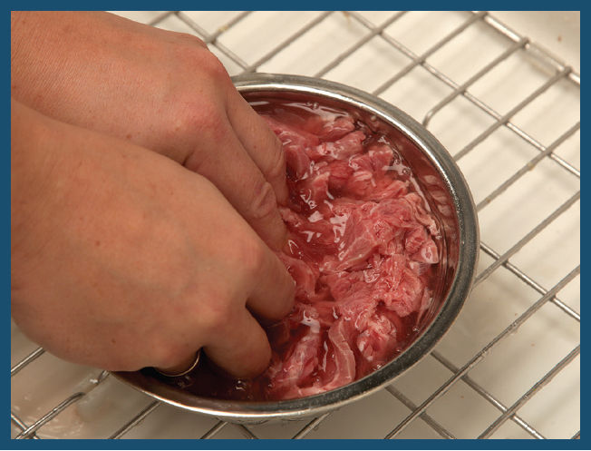
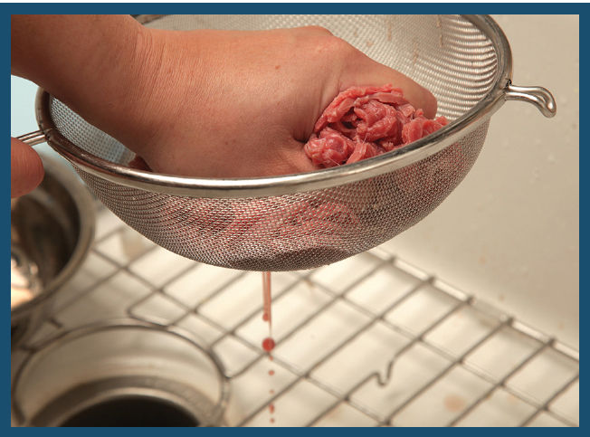
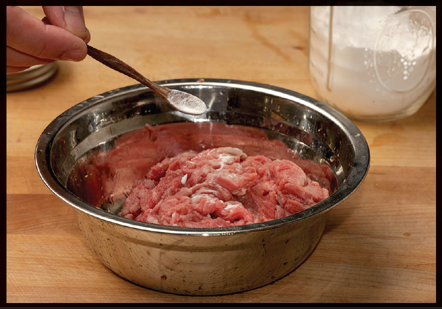

Baking Soda and Deep Tissue Massage: The Secrets to Meltingly Tender Beef
You ever notice how even the crummiest, dingiest take-out joint in the city still manages to serve beef that is meltingly tender? How do they do it? Do they have access to beef cuts we can’t get?
Nope. There are two secrets. The first is vigorous massage. If you watch Chinese chefs at work in a restaurant (or on a YouTube channel, as the case may be), they do not handle their meat gently. If you’ve spent time working in Western kitchens where cuts of meat are frequently served whole, you are trained to handle it gingerly. In nearly every professional kitchen I’ve worked in, tongs were forbidden on the line because they could bruise the product. Spatulas and callused fingers were the only tools that could touch the meat.


With meat that is going to be stir-fried, on the other hand, the more abuse it gets, the better. Vigorously washing the meat in water, squeezing it out as hard as you can, then marinating it through massaging, slapping, lifting, throwing, and general manhandling will only make for meat that has better flavor penetration and a more tender texture.
The second, more important secret to tender stir-fried beef is something you’ve already got in your pantry: baking soda.
The scientific data on exactly how baking soda manages to keep red meat tender is not completely understood, but at least part of the reason it works is that it prevents proteins from bonding; the cross-linking and tightening that proteins do when cooked require a pretty narrow pH range to effectively take place. Just as sitting too long in an acidic marinade can cause meat to tighten up, essentially “cooking” before it has even hit the pan, an alkaline marinade can have the opposite effect, effectively protecting the exterior of the meat from overcooking.
Moreover, alkaline environments expedite the Maillard browning reactions, which means that your meat can develop more flavor in less time while retaining more moisture. It’s a win all around.
The most effective way to use baking soda is to give your meat a bath in alkalized water: for every pound of sliced meat, add a teaspoon of baking soda and 2 cups of water, then vigorously swish it around in a bowl and refrigerate the mixture for a couple hours before rinsing the meat under fresh running water (too much baking soda can introduce off-flavors to the dish). Squeeze it dry in a fine-mesh strainer, then roughly massage it in whatever marinade the recipe calls for.

The other method is to just add a small amount of baking soda directly to your meat and massage it in before adding the rest of the marinade. In small enough quantities, you don’t really taste it (especially in dishes with plenty of other powerful flavors), and your meat comes out noticeably more tender, with a hint of slipperiness (this is a good thing in stir-fries).